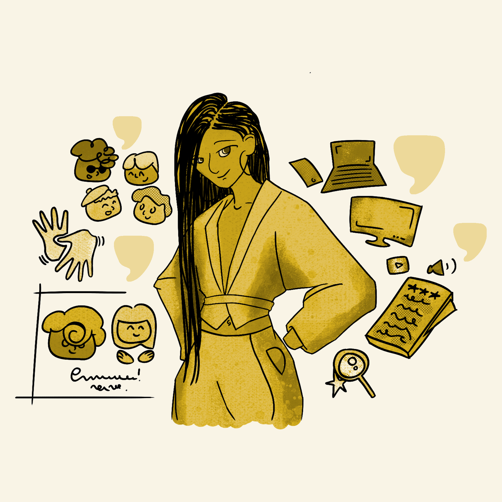
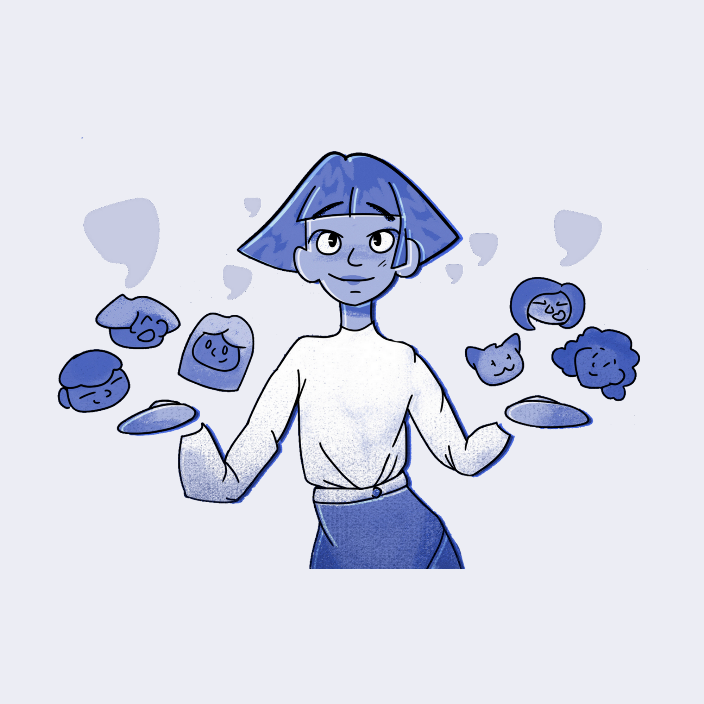
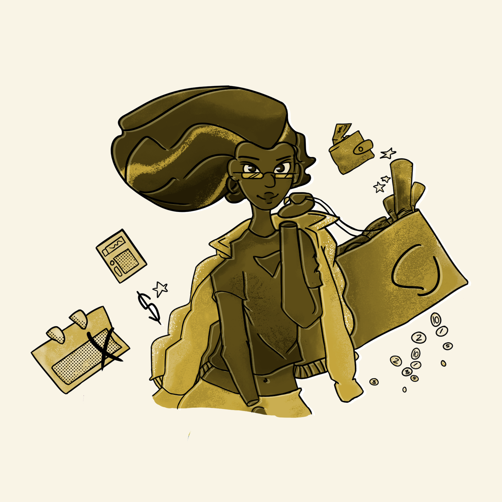
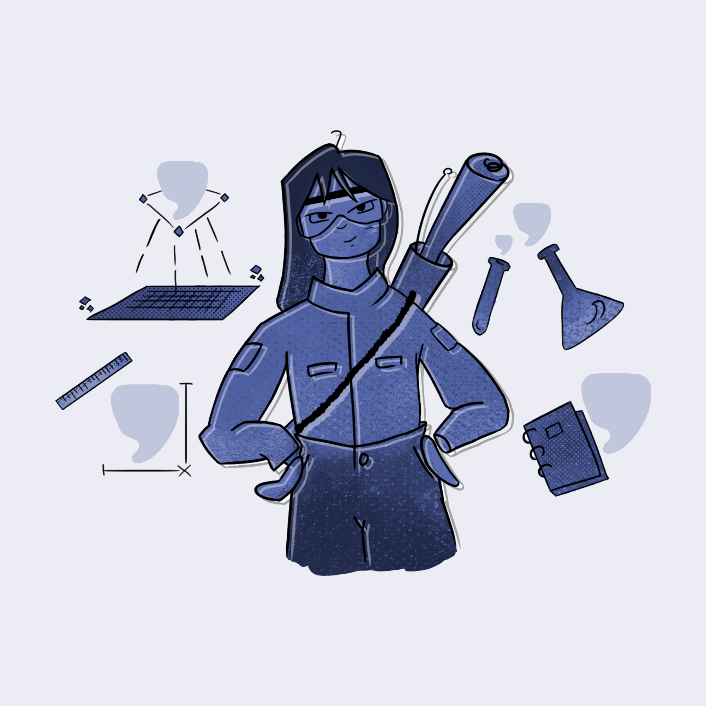

A Diretoria Geral é responsável por supervisionar todas as outras diretorias. É ela quem coordena as atividades dos setores internos, elaborando relatórios sobre o desempenho da EJ. Ela também é responsável por convocar e presidir as Assembleias Gerais, além de garantir o cumprimento das determinações destas reuniões.
É quem representa a CAJu judicialmente e extrajudicialmente, e apesar de tudo isso, não exerce maior autonomia de que as outras diretorias, preservando um ambiente democrático e inclusivo!
Inovação e Acessibilidade

A Diretoria de Inovação e Acessibilidade (DIA), em conjunto com a Diretoria de Projetos, é a responsável por regulamentar e garantir que todas as iniciativas da CAJu sejam sempre inclusivas, acessíveis e humanas, através da manutenção, implementação e melhoramento do Sistema de Gestão de Qualidade - o Selo Castanha - em todas as áreas da EJ. A DIA também assegura a conscientização e o cumprimento dos valores éticos e sociais dentro da empresa, defendendo sempre o direito de todes de serem quem são e de terem acesso aos mesmos lugares, posições e oportunidades.
Gestão de Pessoas e Projetos

Essa diretoria é responsável por selecionar es integrantes da empresa, além de garantir que eles se desenvolvam. Assegurar um processo seletivo justo e inclusivo, a motivação e organização, o desenvolvimento humano e profissional, os valores éticos e sociais, além uma convivência saudável é prioridade. Mas muito se engana quem pensa que o trabalho para por aí. A Diretoria de Gestão de Pessoas e Projetos também é responsável por criar e nutrir laços com possíveis parceires, visando sempre o fortalecimento da equipe CAJu.
Administrativo-financeira

A diretoria Administrativo-financeira é a que executa as aquisições da empresa, cuida dos materiais, equipamentos e documentos, promove balanços periódicos, organiza planos de captação de recursos e distribui essas receitas às diretorias, de acordo com a demanda de cada projeto. Ela também é responsável pela transparência da CAJu: todo o dinheiro da Empresa Júnior (seja ele adquirido através de arrecadações ou por serviços prestados) é destinado a novos projetos e serviços da CAJu e também a fins educacionais, como a capacitação dos membros da nossa equipe.😉
Diretoria de Projetos

Sabe aquela consultoria ou aquela turbinada nas redes sociais que só a equipe da CAJu sabe fazer? Então, todos essas iniciativas nascem aqui, na Diretoria de Projetos. É esse time o responsável por, desde o início, analisar cuidadosamente o perfil das empresas clientes e de criar a identidade visual e os conteúdos para as redes sociais. Além disso, a Diretoria de Projetos é responsável por supervisionar cada um dos serviços prestados pela CAJu e garantir que todos eles tenham o nosso selo de qualidade.
Marketing e R.P.
A diretoria de Marketing e Relações Públicas desenvolve, fortalece e mantém a imagem pública da nossa EJ perante a UFPE, a FEJEPE e nosses clientes… Sabe como? Criando e desenvolvendo o conteúdo aparente da CAJu (esses que vocês veem aqui no site e nas mídias sociais). Mas não é só isso não! A Diretoria tem algumas outras responsabilidades, como propagar as finalidades sociais da empresa, elaborar estratégias de atuação mercadológica, desenvolver meios de comunicação interna entre os membros da empresa e mediar o contato entre a CAJu e seus clientes.